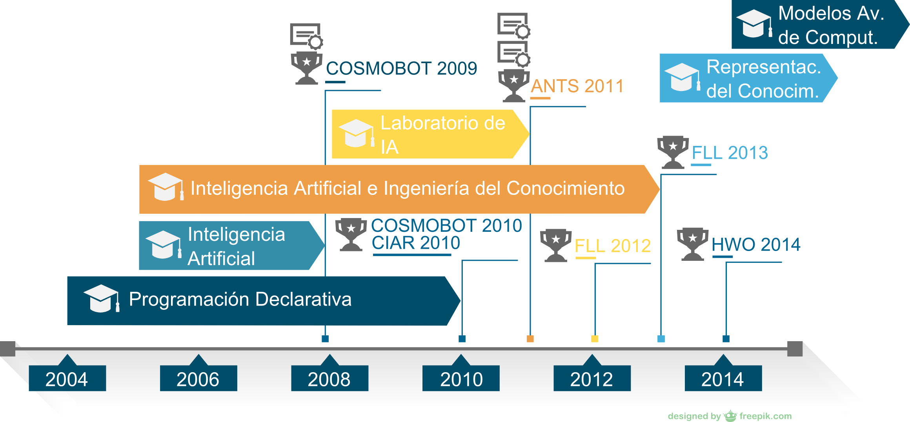

Universidad de Granada
Tesis
Inteligencia Artificial y Juegos Aplicados a la Enseñanza
Presentado por José Carpio Cañada
Capítulos
- Introducción
- Objetivos
- Metodología
- Discusión y resultados
- Conclusiones
Introducción
Punto de partida
¿Podemos ofrecer la calidad de las mejores Universidades al enseñar Inteligencia Artificial?
Punto de partida
- Docencia en Inteligencia Artificial (IA) desde 2004
- Introducimos prácticas con Robots Móviles
- Recursos escasos para mantenimiento de Robots
- Falta de fiabilidad de los Robots
- Temario extenso con multitud de técnicas diferentes
Punto de partida
- Falta de motivación
- Menor rendimiento académico
Antedecentes
Introducción
- Aprender jugando en Inteligencia Artificial
- Competiciones de Robótica aplicadas a la Inteligencia Artificial
- Descripción de las competiciones
Introducción: Aprender jugando en Inteligencia Artificial
Introducción: Competiciones de Robótica aplicadas a la Inteligencia Artificial
Introducción: Descripción de las competiciones
- Cosmobot 2009
- Competición de Inteligencia Artificial y Robótica 2010 (CIAR 2010)
- First Lego League
- Artificial Intelligence Challenge Ants 2011
- Hello World Open Competition 2014
Asignaturas y Competiciones
Aprender jugando en Inteligencia Artificial
Competiciones de Robótica aplicadas a la Inteligencia Artificial
Descripción de las competiciones
Cosmobot 2009
Competición de Inteligencia Artificial y Robótica 2010
First Lego League
Artificial Intelligence Challenge Ants 2011
AI Challenge ANTS 2011
AI Challenge ANTS 2011
AI Challenge ANTS 2011
AI Challenge ANTS 2011
Nacionalidades de los 100 primeros participantes
AI Challenge ANTS 2011
Hello World Open 2014
Objetivos
Objetivo 1:
Probar que la inclusión de competiciones en el aula puede mejorar la experiencia de aprendizaje de la IA.
Objetivo 2:
Proponer una metodología que ayude a los profesores responsables de asignaturas relacionadas con la IA a mejorar la experiencia de aprendizaje de sus alumnos.
Objetivo 3:
Validar la metodología a través de dos experiencias reales en el aula.
Objetivo 4:
Validación de la metodología a través de la publicación de un artículo científico con la participación de alumnos.
Metodología
Metodología (I)
- Adquisición de conocimientos relacionados con la investigación, el método científico, diseño de experimentos, análisis de datos y resultados en el ámbito de la IA.
- Búsqueda de competiciones que se ajusten al periodo lectivo.
- Breve estudio de las características de la competición.
Metodología (II)
- Propuesta de la actividad docente de gamificación al alumnado.
- Diseño de la experiencia de gamificación en la enseñanza
de la IA en ingeniería con las siguientes etapas:
- Diseño de las encuestas para evaluar los diferentes items (motivación, esfuerzo, nivel de aprendizaje, etc.).
- Planificación de la experiencia docente.
- Recopilación de datos previos a la experiencia.
Metodología (III)
- Puesta en marcha de la actividad docente.
- Recopilación de datos posteriores a la experiencia.
- Análisis de los datos obtenidos.
- Análisis de las conclusiones.
- Publicación en revistas de impacto de las experiencias.
Discusión y Resultados
Carnegie Mellon University vs Universidad de Huelva
participantes12 vs 18
mejor clasificado
435 vs
Conclusiones
Conclusión 1:
La metodología propuesta para el uso de la gamificación en el aprendizaje de la IA es adecuada y que obtiene mejoras significativas en aspectos como la motivación y la mejora de los conocimientos adquiridos.
Conclusión 2:
Que es posible introducir de forma satisfactoria este tipo de experiencias dentro de los planes de estudios tradicionales y que es posible compatibilizar el enfoque más tradicional de la enseñanza.
Conclusión 3:
Que en el presente trabajo encontrará una guía para poner en práctica una experiencia de gamificación en el aula con información sobre recursos necesarios y una orientación sobre la planificación de la actividad.
Conclusión 4:
Que es posible utilizar la experiencia de gamificación en el aula como una herramienta que introduzca a los alumnos en la investigación.